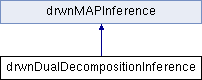

Implements dual decomposition MAP inference (see Komodakis and Paragios, CVPR 2009 and works cited therein). Each factor is treated as a separate slave. More...
Inheritance diagram for drwnDualDecompositionInference:

Public Member Functions | |
| drwnDualDecompositionInference (const drwnFactorGraph &graph) | |
| std::pair< double, double > | inference (drwnFullAssignment &mapAssignment) |
Run inference (or resume for iterative algorithms). Algorithms may initialize from mapAssignment if not empty. Returns an upper and lower bound (if available) of the minimum energy. The upper bound is the same as the energy of the best solution found (i.e., same as graph.getEnergy(mapAssignment)). More... | |
 Public Member Functions inherited from drwnMAPInference Public Member Functions inherited from drwnMAPInference | |
| drwnMAPInference (const drwnFactorGraph &graph) | |
| drwnMAPInference (const drwnMAPInference &inf) | |
| virtual void | clear () |
| Clear internally cached data (e.g., computation graph) | |
Static Public Attributes | |
| static double | INITIAL_ALPHA = 0.5 |
| initial gradient step size | |
| static bool | USE_MIN_MARGINALS = false |
| use min-marginals for subgradients | |
Additional Inherited Members | |
| Protected Attributes inherited from drwnMAPInference | |
| const drwnFactorGraph & | _graph |
| reference to initial clique potentials | |
Detailed Description
Implements dual decomposition MAP inference (see Komodakis and Paragios, CVPR 2009 and works cited therein). Each factor is treated as a separate slave.
Member Function Documentation
◆ inference()
|
virtual |
Run inference (or resume for iterative algorithms). Algorithms may initialize from mapAssignment if not empty. Returns an upper and lower bound (if available) of the minimum energy. The upper bound is the same as the energy of the best solution found (i.e., same as graph.getEnergy(mapAssignment)).
- Todo:
- change for min-marginal subgradient
Implements drwnMAPInference.
The documentation for this class was generated from the following files:
- drwnMapInference.h
- drwnMapInference.cpp